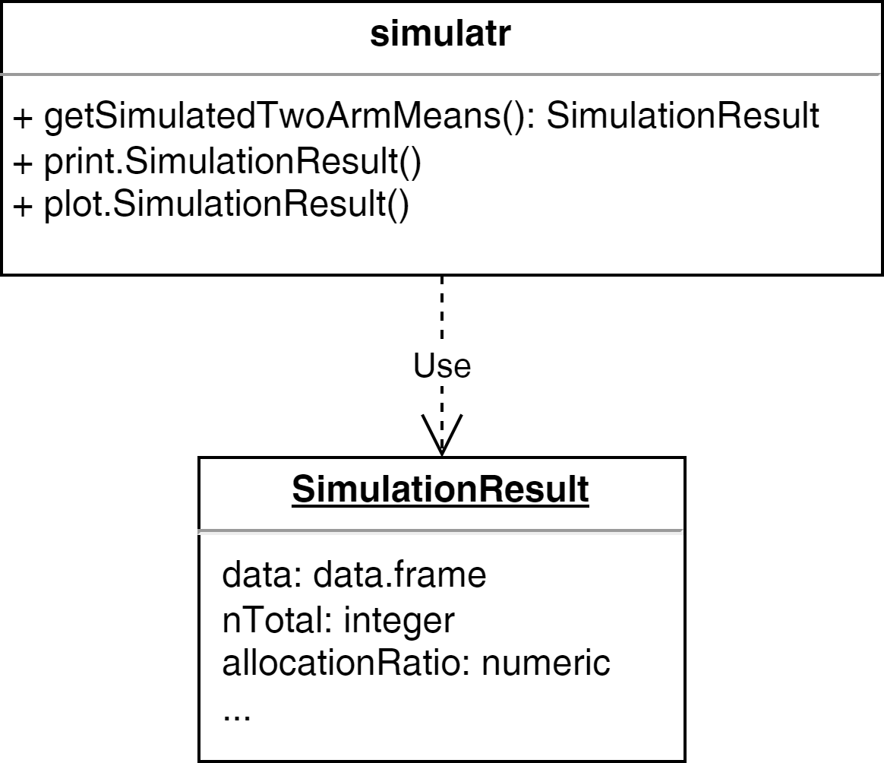

3 Ensuring Quality
openstatsware short course: Good Software Engineering Practice for R Packages
August 24, 2025
Quality by Design: Recommended Workflow
Photo CC0 by Kateryna Babaieva on pexels.com
Suggestion for a High Quality Workflow
- Idea
- Design docs
- R package programming (see the previous section)
- Quality check (see this section)
- Publication (see later today)
- Use in production
Example - Step 1: Idea
Let’s assume that you used some lines of code to create simulated data in multiple projects:
Idea: put the code into a package
Example - Step 2: Design docs
- Describe the purpose and scope of the package
- Analyse and describe the requirements in clear and simple terms (“prose”)
| Obligation level | Key word1 | Description |
|---|---|---|
| Duty | must2 | “must have” |
| Desire | should | “nice to have” |
| Intention | may | “optional” |
- Create prototype code (if not already done)
Example - Step 2: Design docs
Purpose and Scope
The R package simulatr is intended to enable the creation of reproducible fake data.
Package Requirements
simulatr must provide a function to generate normal distributed random data for two independent groups. The function must allow flexible definition of sample size per group, mean per group, standard deviation per group. The reproducibility of the simulated data must be ensured via an optional seed. It should be possible to print the function result. The package may also facilitate graphical presentation of the simulated data.
Example - Step 2: Design docs
Useful formats / tools for design docs:
- R Markdown1 (*.Rmd)
- Quarto1 (*.qmd)
- Overleaf2
- draw.io3
UML Diagram

Example - Step 3: Packaging
R package programming
- Create basic package project (see previous section)
- C&P existing R scripts (one-off scripts, prototype functions) and apply clean code rules (see next section!)
- Create R generic functions
- Document all functions
Apply Clean Code Rules

Why is Clean Code important?
- Maintainability: The code is readable and understandable and has a reduced complexity, i.e., it’s easier to fix bugs
- Extensibility: The architecture is simpler, cleaner, and more expressive, i.e., it’s easier to extend the capabilities and the risk of introducing bugs is reduced
- Performance: The code often runs faster, uses less memory, or is easier to optimize
Example: Clean Code Rules - Step by Step
This script breaks all common clean code rules:
# fmt: skip
y=function(x){
s1=0
for(v1 in x){s1=s1+v1}
m1=s1/length(x)
i=ceiling(length(x)/2)
if(length(x) %% 2 == 0){i=c(i,i+1)}
s2=0
for(v2 in i){s2=s2+x[v2]}
m2=s2/length(i)
c(m1,m2)
}
y(c(1:7, 100))[1] 16.0 4.5We now refactor it by applying clean code rules…
Example: CCR#1
CCR#1 Naming: Are the names of the variables, functions, and classes descriptive and meaningful?
Example: CCR#1
# fmt: skip
getMeanAndMedian=function(x){
sum1=0
for(value in x){sum1=sum1+value}
meanValue=sum1/length(x)
centerIndices=ceiling(length(x)/2)
if(length(x) %% 2 == 0){
centerIndices=c(centerIndices,centerIndices+1)
}
sum2=0
for(centerIndex in centerIndices){sum2=sum2+x[centerIndex]}
medianValue=sum2/length(centerIndices)
c(meanValue,medianValue)
}CCR#1 Naming
CCR#2 Formatting: Are indentation, spacing, and bracketing consistent, i.e., is the code easy to read
Example: CCR#2
getMeanAndMedian <- function(x) {
sum1 <- 0
for (value in x) {
sum1 <- sum1 + value
}
meanValue <- sum1 / length(x)
centerIndices <- ceiling(length(x) / 2)
if (length(x) %% 2 == 0) {
centerIndices <- c(
centerIndices, centerIndices + 1)
}
sum2 <- 0
for (centerIndex in centerIndices) {
sum2 <- sum2 + x[centerIndex]
}
medianValue <- sum2 / length(centerIndices)
c(meanValue, medianValue)
}CCR#2 Formatting
CCR#3 Simplicity: Did you keep the code as simple and straightforward as possible, i.e., did you avoid unnecessary complexity
Example: CCR#3
Note:
- From the Simplicity rule also follows that large source files should be split into multiple files
- General guideline: keeping the number of lines to less than 1,000 lines per file can help maintain code readability and manageability
Example: CCR#3
CCR#3 Simplicity
CCR#4 Single Responsibility Principle (SRP): does each function have only a single, well-defined purpose
Example: CCR#4
getMean <- function(x) {
sum(x) / length(x)
}
isLengthAnEvenNumber <- function(x) {
length(x) %% 2 == 0
}
getMedian <- function(x) {
centerIndices <- ceiling(length(x) / 2)
if (isLengthAnEvenNumber(x)) {
centerIndices <- c(centerIndices, centerIndices + 1)
}
sum(x[centerIndices]) / length(centerIndices)
}CCR#4 Single Responsibility Principle (SRP)
CCR#5 Don’t Repeat Yourself (DRY): Did you avoid duplication of code, either by reusing existing code or creating functions
Example: CCR#5
CCR#5: DRY
Suppose you have a code block that performs the same calculation multiple times:
Create a function to encapsulate this calculation and reuse it multiple times:
Example: CCR#5
CCR#5 Don’t Repeat Yourself (DRY)
CCR#6 Comments: Did you use comments to explain the purpose of code blocks and to clarify complex logic
Example: CCR#6
# returns the mean of x
getMean <- function(x) {
sum(x) / length(x)
}
# returns TRUE if the length of x is
# an even number; FALSE otherwise
isLengthAnEvenNumber <- function(x) {
length(x) %% 2 == 0
}
# returns the median of x
getMedian <- function(x) {
centerIndices <- ceiling(length(x) / 2)
if (isLengthAnEvenNumber(x)) {
centerIndices <- c(centerIndices,
centerIndices + 1)
}
getMean(x[centerIndices])
}Example: CCR#7
#' returns the mean of x
getMean <- function(x) {
checkmate::assertNumeric(x)
sum(x) / length(x)
}
#' returns TRUE if the length of x is an even number; FALSE otherwise
isLengthAnEvenNumber <- function(x) {
checkmate::assertVector(x)
length(x) %% 2 == 0
}
#' returns the median of x
getMedian <- function(x) {
checkmate::assertNumeric(x)
centerIndices <- ceiling(length(x) / 2)
if (isLengthAnEvenNumber(x)) {
centerIndices <- c(centerIndices, centerIndices + 1)
}
getMean(x[centerIndices])
}CCR#7 Error Handling
Summary of Clean Code Rules
- Naming: Use descriptive and meaningful names for variables, functions, and classes
- Formatting: Adhere to consistent indentation, spacing, and bracketing to make the code easy to read
- Simplicity: Keep the code as simple and straightforward as possible, avoiding unnecessary complexity
- Single Responsibility Principle (SRP): Each function should have a single, well-defined purpose
- Don’t Repeat Yourself (DRY): Avoid duplication of code, either by reusing existing code or creating functions
Summary of Clean Code Rules
- Comments: Use comments to explain the purpose of code blocks and to clarify complex logic
- Error Handling: Include error handling code to gracefully handle exceptions and unexpected situations
- Test-Driven Development (TDD): Write tests for your code to ensure it behaves as expected and to catch bugs early
- Refactoring: Regularly refactor your code to keep it clean, readable, and maintainable
- Code Review: Have other team members review your code to catch potential issues and improve its quality
How to apply Clean Code Rules?
Recommended quality workflow for R packages:
- Follow the naming and styling guidelines (#1, #2)
- Continuously write tests and optimize the code coverage with help of tools (#7, #8)
- Document the package and functions (#6)
- Regularly refactor your code (#1 - #7, #9)
- Publish your code on GitHub and invite colleagues to contribute (#10)
Package Testing
CCR#8: TDD
Verification vs Validation
Verification:
Are we building the product right?
- The product meets a set of specified requirements
- Activities: reviews, inspections, and testing
- Goal: ensure that the product has been designed and implemented correctly
Validation:
Are we building the right product?
- Evaluate the product during or at the end of the development process
- Show that the product meet the specified requirements
- Goal: confirm that the product is fit for its intended purpose
\(\rightarrow\) Refers back to the user’s needs
What are Unit Tests?
- Automated tests
- Record the expected output of a function using code
- Check individual units of code (functions or methods) for correctness
- Typically written by developers as part of the software development process
- Typically run automatically as part of a CI/CD pipeline
- Can be run before committing code changes
Why are unit tests important?
CCR#8: TDD
- Help to ensure that individual units of code are working correctly
- Ensure that changes to the codebase do not break existing functionality
- Express the desired behavior in a way that a human can understand
- Help to identify and fix bugs early on in the development process
- Save time and resources by catching issues before they become more difficult and costly to fix
Unit tests help to increase the reliability and maintainability of the code
What other important test types exist?
- Integration Testing: Test if different functions or scripts work together as expected
- Performance Testing: Analyze the performance of the implemented functions and check whether they meet the requirements (UR/UX)
- Snapshot Testing: Record the results in a separate human-readable file and compare it to the output during the test; useful for large/complex outputs and binary formats like plots
Testing in Practice
How to realize testing with R?
R package testthat
- Popular testing framework for R that is easy to learn and use
- Unit testing, integration testing, and snapshot testing supported
- Also performance testing, e.g., with help of microbenchmark package
Example: unit test passed
Example: unit test failed
Error: getMean(c(1, 3, 2, NA)) not equal to 2. Error: getMedian(c(1, 3, 2)) not equal to 2.
Investigating failed tests
#' returns the mean of x
getMean <- function(x, na.rm = TRUE) {
checkmate::assertNumeric(x)
sum(x, na.rm = na.rm) / length(x[!is.na(x)])
}
#' returns TRUE if the length of x is an even number; FALSE otherwise
isLengthAnEvenNumber <- function(x) {
checkmate::assertVector(x)
length(x[!is.na(x)]) %% 2 == 0
}
#' returns the median of x
getMedian <- function(x, na.rm = TRUE) {
checkmate::assertNumeric(x)
centerIndices <- ceiling(length(x[!is.na(x)]) / 2)
if(anyNA(x) & !na.rm){
centerIndices <- NA_real_
} else if (isLengthAnEvenNumber(x)) {
centerIndices <- c(centerIndices, centerIndices + 1)
}
getMean(sort(x)[centerIndices])
}Re-evaluate tests
testthat Comparisons Functions (1/2)
| Function name | Does code… |
|---|---|
| expect_condition | fulfill a condition? |
| expect_equal | return the expected value? |
| expect_error | throw an error? |
| expect_false | return ‘FALSE’? |
| expect_gt | return a number greater than the expected value? |
| expect_gte | return a number greater or equal than the expected value? |
| expect_identical | return the expected value? |
| expect_invisible | return a invisible object? |
| expect_length | return a vector with the specified length? |
| expect_lt | return a number less than the expected value? |
| expect_lte | return a number less or equal than the expected value? |
| expect_mapequal | return a vector containing the expected values? |
| expect_message | show a message? |
| expect_named | return a vector with (given) names? |
testthat Comparisons Functions (2/2)
| Function name | Does code… |
|---|---|
| expect_no_condition | run without condition? |
| expect_no_error | run without error? |
| expect_no_message | run without message? |
| expect_no_warning | run without warning? |
| expect_output | print output to the console? |
| expect_s3_class | return an object inheriting from the expected S3 class? |
| expect_s4_class | return an object inheriting from the expected S4 class? |
| expect_setequal | return a vector containing the expected values? |
| expect_silent | execute silently? |
| expect_true | return ‘TRUE’? |
| expect_type | return an object inheriting from the expected base type? |
| expect_vector | return a vector with the expected size and/or prototype? |
| expect_visible | return a visible object? |
| expect_warning | throw warning? |
How to check the package quality?
- pkgbuild: Tools needed to build R packages
- rcmdcheck: Run R CMD check from R and capture results
- devtools: Tools to make developing R packages easier, e.g., check() automatically builds and checks a source package, using all known best practices
How to improve the test coverage?
covr: Track and report code coverage for your package
Example on test coverage
Let’s assume we have added a generic function to cat a simulation result:
Example on test coverage
Example on test coverage
We can go into the details by clicking on a file name:
Code Style
CCR#2: Formatting
Why is Code Style important?
CCR#2: Formatting
- Make the code more readable, maintainable, and consistent
- Make it easier for others to understand and contribute to the codebase
- Adhering to a consistent code style can reduce the number of errors and make debugging simpler
- “Good coding style is like correct punctuation: you can manage without it, butitsuremakesthingseasiertoread.” (The tidyverse style guide)
How to optimize the code styling?
Two popular R packages support the tidyverse style guide:
- styler: interactively restyle selected text, files, or entire projects:
- lintr: perform automated checks to confirm that you conform to the style guide
The devtools function spell_check runs a spell check on text fields in the package description file, manual pages, and optionally vignettes.
Code Styler in RStudio
How to link the styler1 package to a keyboard shortcut:
Exercise
Please install the following packages before we moving on
Tasks
Take your local simulatr package project (see previous excercise) and refactor it, i.e., apply the linked clean code rules:
- Optimize naming manually (CCR#1)
- Use the styler package to optimize the formatting (CCR#2)
- Check and correct where appropriate:
- Simplicity (CCR#3)
- Single Responsibility Principle (CCR#4)
- Don’t Repeat Yourself (CCR#5)
- Implement appropriate error handling (CCR#7) in the simulatr package
- Add comments to explain the purpose of code blocks (CCR#6)
- If it concerns exported functions use Roxygen2 notation
- Check correct spelling with the devtools function spell_check()
Apply CCR#8 to the simulatr package project:
- Add unit tests
- Optimize your test coverage with help of the covr functions package_coverage and report
References
License information
- Creators (initial authors): Friedrich Pahlke , Andrew Bean
- In the current version, changes were done by (later authors): TODO Daniel Sabanes Bove
- This work is licensed under the Creative Commons Attribution-ShareAlike 4.0 International License.
- The source files are hosted at github.com/openstatsware/shortcourse-iscb2025, which is forked from the original version at github.com/RCONIS/workshop-r-swe-zrh.
- Important: to use this work you must provide the name of the creators (initial authors), a link to the material, a link to the license, and indicate if changes were made.